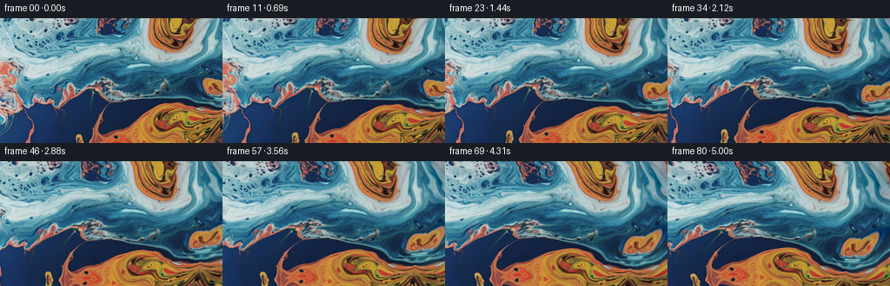

CODING AGENTS AS PIXEL WORLD MODELS
traex/GPT-6.1-Sol · 0002_s2
点击播放 · 原生 RGB 像素
逐轮保存的候选
回放视频、检查图与代码变化。
每份候选均可单独播放。实际图片检查记录在下方工具轨迹中。
候选 01播放与检查图
点击播放 · 原生 RGB 像素

展开代码变化
--- 上一保存版本
+++ 本次保存版本
@@ -0,0 +1,151 @@
+"""Animate the input macro liquid photograph using a continuous material map.
+
+Only the supplied RGB photograph is used as image material. A small surrounding
+plate is extended from its own edge pixels; smooth, divergence-free deformations
+move the fluid while a separate camera translation pans to the right.
+"""
+from pathlib import Path
+import numpy as np
+from PIL import Image, ImageFilter
+
+import artifact_io
+
+
+ROOT = Path(__file__).resolve().parent
+
+
+def reflected(a, n):
+ a = np.mod(a, 2.0 * (n - 1))
+ return np.where(a <= n - 1, a, 2.0 * (n - 1) - a)
+
+
+def linear_sample(image, x, y):
+ h, w = image.shape[:2]
+ x = np.clip(x, 0, w - 1.001)
+ y = np.clip(y, 0, h - 1.001)
+ ix, iy = x.astype(np.int32), y.astype(np.int32)
+ dx, dy = (x - ix)[..., None], (y - iy)[..., None]
+ return ((image[iy, ix] * (1 - dx) + image[iy, ix + 1] * dx) * (1 - dy)
+ + (image[iy + 1, ix] * (1 - dx) + image[iy + 1, ix + 1] * dx) * dy)
+
+
+def cubic_weights(f):
+ # Interpolating Catmull-Rom reconstruction keeps the fine liquid highlights.
+ f2, f3 = f * f, f * f * f
+ return (-0.5 * f + f2 - 0.5 * f3,
+ 1.0 - 2.5 * f2 + 1.5 * f3,
+ 0.5 * f + 2.0 * f2 - 1.5 * f3,
+ -0.5 * f2 + 0.5 * f3)
+
+
+def cubic_sample(image, x, y):
+ h, w = image.shape[:2]
+ x, y = np.clip(x, 1, w - 3.001), np.clip(y, 1, h - 3.001)
+ ix, iy = np.floor(x).astype(np.int32), np.floor(y).astype(np.int32)
+ wx, wy = cubic_weights(x - ix), cubic_weights(y - iy)
+ result = np.zeros(x.shape + (3,), np.float32)
+ for j in range(4):
+ row = np.zeros_like(result)
+ for i in range(4):
+ row += image[iy + j - 1, ix + i - 1] * wx[i][..., None]
+ result += row * wy[j][..., None]
+ return result
+
+
+def make_plate(source, padding=48, extension=116):
+ """Continue the edge's liquid texture, without a hard or repeated border.
+
+ The continuation bends the reflected coordinates and restores the outward
+ low-frequency edge derivative, so there is no obvious straight mirror axis.
+ The entire original rectangle is left unmodified.
+ """
+ h, w = source.shape[:2]
+ yy, xx = np.mgrid[-padding:h + padding, -padding:w + extension].astype(np.float32)
+ sx, sy = reflected(xx, w), reflected(yy, h)
+ distance = np.maximum(xx - (w - 1), 0)
+ bend = 1 - np.exp(-distance / 21)
+ sx = np.where(xx > w - 1,
+ w - 1 - distance * (0.91 + 0.075 * np.sin(yy / 31))
+ + 1.8 * bend * np.sin(yy / 12 + distance / 19), sx)
+ sy = reflected(sy + 4.3 * bend * np.sin(sy / 27 + distance / 42), h)
+ plate = linear_sample(source, reflected(sx, w), sy)
+
+ blurred = np.asarray(Image.fromarray(source.astype(np.uint8)).filter(
+ ImageFilter.GaussianBlur(5)), dtype=np.float32)
+ slope = (blurred[:, -1] - blurred[:, -7]) / 6
+ iy = np.minimum(sy.astype(int), h - 2)
+ fy = (sy - iy)[..., None]
+ gradient = slope[iy] * (1 - fy) + slope[iy + 1] * fy
+ plate += gradient * (2 * distance * np.exp(-distance / 20))[..., None]
+ plate = np.clip(plate, 0, 255).astype(np.float32)
+ plate[padding:padding + h, padding:padding + w] = source
+ return plate
+
+
+def vortex(x, y, cx, cy, radius, angular_speed, time):
+ dx, dy = x - cx, y - cy
+ a = angular_speed * time * np.exp(-(dx * dx + dy * dy) / (2 * radius * radius))
+ c, s = np.cos(a), np.sin(a)
+ return cx + c * dx - s * dy, cy + s * dx + c * dy
+
+
+def material_coordinates(x, y, t):
+ # Camera pans right: fixed details drift to the left, with no zoom or roll.
+ # A very short, smooth acceleration avoids a jarring initial velocity jump.
+ travel = 9.2 * (t - 0.14 * (1 - np.exp(-t / 0.14)))
+ u, v = x + travel, y.copy()
+
+ # Backward material maps: gentle eddies bend the blue/orange interfaces.
+ # Each radius-dependent rotation is area preserving.
+ u, v = vortex(u, v, 206, 128, 63, -0.073, t)
+ u, v = vortex(u, v, 184, 13, 49, 0.064, t)
+ u, v = vortex(u, v, 68, 62, 91, -0.025, t)
+ u, v = vortex(u, v, 285, 64, 61, 0.033, t)
+
+ # Successive horizontal/vertical shears are also incompressible. Their
+ # long wavelengths provide the slow sliding/refraction of close-up liquid.
+ u += 1.20 * t * np.tanh((v - 68) / 37)
+ u += 3.3 * (np.sin(v / 24 + 0.62 * t) - np.sin(v / 24))
+ v += 2.35 * (np.sin(u / 32 - 0.73 * t + 0.6) - np.sin(u / 32 + 0.6))
+ u += 1.15 * (np.sin(v / 11 - 0.95 * t + u / 93)
+ - np.sin(v / 11 + u / 93))
+ v += 0.60 * (np.sin(u / 9 + 0.82 * t + v / 62)
+ - np.sin(u / 9 + v / 62))
+ return u, v
+
+
+def generate():
+ source = np.asarray(Image.open(ROOT / 'first_frame.png').convert('RGB'))
+ h, w = source.shape[:2]
+ assert (h, w) == (144, 256)
+ plate = make_plate(source.astype(np.float32))
+ yy, xx = np.mgrid[:h, :w].astype(np.float32)
+ frames = np.empty((81, h, w, 3), dtype=np.uint8)
+ frames[0] = source
+ for k in range(1, 81):
+ t = k / 16
+ u, v = material_coordinates(xx, yy, t)
+ rgb = cubic_sample(plate, u + 48, v + 48)
+
+ # Existing highlights, rather than new drawn objects, catch a subtly
+ # changing light as the ripples move. Hue stays tied to the photograph.
+ luma = 0.213 * rgb[..., 0] + 0.715 * rgb[..., 1] + 0.072 * rgb[..., 2]
+ specular = np.clip((luma - 105) / 110, 0, 1)
+ glint = (np.sin(u / 25 + v / 16 - 0.74 * t)
+ - np.sin(u / 25 + v / 16))
+ rgb += (1.5 * glint * specular)[..., None]
+ frames[k] = np.clip(np.rint(rgb), 0, 255).astype(np.uint8)
+
+ # Retain a small numeric inspection record alongside the saved RGB artifact.
+ np.savez_compressed(ROOT / '.tmp' / 'candidate_rgb.npz', frames=frames)
+ differences = np.abs(np.diff(frames.astype(np.float32), axis=0))
+ print('Frames:', frames.shape, frames.dtype)
+ print('First frame identical:', np.array_equal(frames[0], source))
+ print('Mean successive RGB changes:', differences.mean((1, 2, 3))[[0, 1, 19, 39, 59, 79]])
+ print('Final range:', frames[-1].min(), frames[-1].max())
+ artifact_io.save(frames, ROOT)
+
+
+if __name__ == '__main__':
+ (ROOT / '.tmp').mkdir(exist_ok=True)
+ generate()
候选 02播放与检查图

可观测工具轨迹
实际执行的命令与返回图片。
命令 1exit 0
/bin/bash -lc "ls -la && cat prompt.txt && printf '\\n--- RULES ---\\n' && cat GENERATION_RULES.md"
命令 2exit 0
/bin/bash -lc "cat task_spec.json && cat artifact_io.py && python - <<'PY'
from PIL import Image
import numpy as np
im=np.array(Image.open('first_frame.png').convert('RGB'))
print('shape',im.shape)
print('channel min mean max',im.min((0,1)),im.mean((0,1)),im.max((0,1)))
q=(im//32)*32
vals,counts=np.unique(q.reshape(-1,3),axis=0,return_counts=True)
for i in np.argsort(counts)[-25:][::-1]: print(vals[i],counts[i])
print('RGB averages 16x9 blocks')
for row in im.reshape(9,16,16,16,3).mean((1,3)).astype(int):print(' '.join(','.join(map(str,p)) for p in row))
# color category counts map: orange o, pale-yellow y, blue b, teal t, dark . light w
r,g,b=im.transpose(2,0,1).astype(float)
cat=np.full(r.shape, '.',dtype='<U1')
cat[(b>r*1.2)&(b>50)]='b';cat[(g>r*1.25)&(g>b*.8)&(g>70)]='t'
cat[(r>b*1.3)&(r>80)]='o';cat[(r>b*1.3)&(g>r*.75)&(r>120)]='y'
cat[(np.minimum(np.minimum(r,g),b)>155)]='w'
print('dominant categories 64x36')
for yy in range(0,144,4):
print(''.join(np.unique(cat[yy:yy+4,xx:xx+4],return_counts=True)[0][np.argmax(np.unique(cat[yy:yy+4,xx:xx+4],return_counts=True)[1])] for xx in range(0,256,4)))
print('boundary columns mean std')
for x in [0,10,20,64,128,192,224,240,255]:print(x,im[:,x].mean(0).round(2),im[:,x].std(0).round(2))
PY"命令 3exit 0
/bin/bash -lc "python - <<'PY'
from PIL import Image
import numpy as np
I=np.array(Image.open('first_frame.png')).astype(float)
y=.2126*I[:,:,0]+.7152*I[:,:,1]+.0722*I[:,:,2]
chars=' .:-=+*#%@'
print('luminance 128x48:')
for j in range(0,144,3):
row=y[j:j+3].reshape(3,128,2).mean((0,2)); print(''.join(chars[min(9,int(x*10/256))] for x in row))
print('gradient magnitudes')
for sigma in [0,1,2,4,8,16]:
from PIL import ImageFilter
A=np.array(Image.open('first_frame.png').filter(ImageFilter.GaussianBlur(sigma))).astype(float)
print(sigma,np.mean(np.abs(np.diff(A,axis=0))),np.mean(np.abs(np.diff(A,axis=1))))
PY"命令 4exit 0
/bin/bash -lc "python generate.py && python - <<'PY'
from pathlib import Path
import numpy as np
from PIL import Image
from generate import make_plate,material_coordinates
I=np.array(Image.open('first_frame.png'))
f=np.load('.tmp/candidate_rgb.npz')['frames']
print('artifact',np.load('pixels.npz')['pixels'].shape)
for k in [0,1,20,40,60,80]:
F=f[k].astype(float)
grad=np.abs(np.diff(F,axis=1)).mean((0,2))
print(k,'RGB mean',F.mean((0,1)).round(1), 'x-gradient range',grad.min().round(1),grad.max().round(1), 'right 32 mean',F[:,-32:].mean((0,1)).round(1))
y,x=np.mgrid[:144,:256].astype(np.float32)
for t in [0,1,3,5]:
u,v=material_coordinates(x,y,t)
uy,ux=np.gradient(u);vy,vx=np.gradient(v)
jac=ux*vy-uy*vx
print('t',t,'map extents',u.min(),u.max(),v.min(),v.max(),'Jacobian',np.percentile(jac,[0,1,50,99,100]))
print('outputs',[(p.name,p.stat().st_size) for p in Path('.').glob('*') if p.is_file()])
PY"保存候选 2 份；完成命令 4 次；可验证图片返回 0 张。原始 API 响应与完整日志保留在本地。